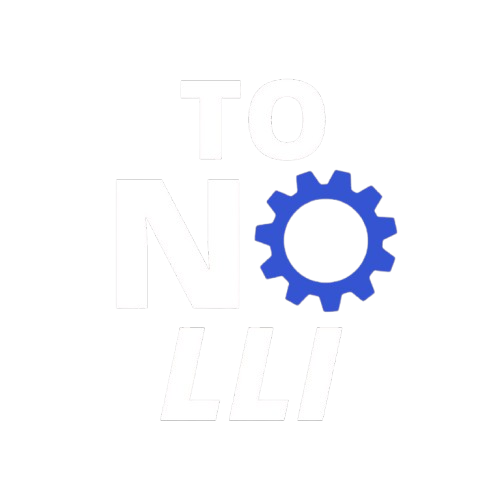

Sobre Nós
A M&A Tonolli é especializada em assistência técnica KaVo, oferecendo serviços de manutenção preventiva e reparo de equipamentos odontológicos. Trabalhamos com instrumentos KaVo, motores cirúrgicos (ExpertSurg, KonceptSurg, ElectroMatic), mangueiras e placas eletrônicas, garantindo soluções confiáveis e de alta qualidade para dentistas e clínicas. Nosso compromisso é proporcionar eficiência, durabilidade e segurança para os equipamentos que mantêm seu consultório em pleno funcionamento. 🚀💙
Sobre o Fundador
O fundador da M&A Tonolli, Mario Tonolli Junior, possui uma trajetória de mais de 35 anos de experiência no setor, incluindo 30 anos de atuação na KaVo, onde desempenhou um papel fundamental como Coordenador de Pós-Vendas. Durante sua carreira, foi responsável por liderar treinamentos técnicos para assistências em todo o Brasil, compartilhando seu amplo conhecimento sobre manutenção e reparo de equipamentos odontológicos. Sua expertise e compromisso com a excelência garantem um serviço de alto nível, alinhado aos padrões de qualidade da KaVo. 🛠️🔧